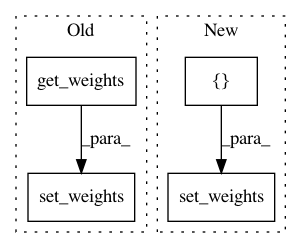

4b83c1070cebd0d996ba2cc69779dcb66d5d0032,autokeras/graph.py,Graph,to_add_skip_model,#Graph#Any#Any#,388
Before Change
new_node_id = self._add_new_node()
layer = StubWeightedAdd()
if self.weighted:
layer.set_weights(WeightedAdd().get_weights())
dropout_output_id = self.adj_list[dropout_input_id][0][0]
self._redirect_edge(dropout_input_id, dropout_output_id, new_node_id)
self._add_edge(layer, new_node_id, dropout_output_id)
After Change
new_node_id = self._add_new_node()
layer = StubWeightedAdd()
if self.weighted:
layer.set_weights([np.float32(1.0)])
dropout_output_id = self.adj_list[dropout_input_id][0][0]
self._redirect_edge(dropout_input_id, dropout_output_id, new_node_id)
self._add_edge(layer, new_node_id, dropout_output_id)
In pattern: SUPERPATTERN
Frequency: 3
Non-data size: 4
Instances
Project Name: keras-team/autokeras
Commit Name: 4b83c1070cebd0d996ba2cc69779dcb66d5d0032
Time: 2018-05-29
Author: jhfjhfj1@gmail.com
File Name: autokeras/graph.py
Class Name: Graph
Method Name: to_add_skip_model
Project Name: keras-team/autokeras
Commit Name: 7977092d28d710ed325e4d91816fe39f504c06b8
Time: 2018-05-07
Author: jin@tamu.edu
File Name: tests/test_layer_transformer.py
Class Name:
Method Name: test_wider_bn
Project Name: keras-team/autokeras
Commit Name: 91cbd2d82c68b7e59b19a3e6f3661d7260278062
Time: 2018-05-27
Author: jin@tamu.edu
File Name: autokeras/graph.py
Class Name: Graph
Method Name: to_add_skip_model